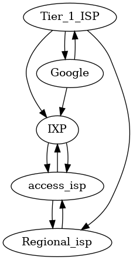
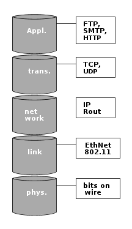
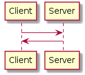

Table of Contents
1 Computer Networks and the Internet
1.1 Internet overview
1.1.1 Devices
- host = end system, runs apps
1.1.2 Communication Links
- fiber, copper, radio, satellite
1.1.3 Packet switches
- routers and switches
1.2 Service view of the internet
1.2.1 Provider of services to apps
- Web, VoIP, email, games, eCommerce, social net
1.2.2 Programming interface to apps
- hooks
- service options (postal)
1.3 Protocols
1.3.1 Definition
A protocol defines the format and the order of messages exchanged between two or more communicating entitites, as well as the actions taken on the transmission and/or receipt of a message or other event.
1.3.2 Required
- format
- order of messages
1.4 Network edge
1.4.1 Access networks
- Wired, wireless comms links
How does one connect an edge to a router?
- Frequency division multiplexing
- Cable network is shared
- HFC: hybrid fiber coax
- fiber homes -> ISP router
- DSL
- Ethernet
- WLAN: IEEE802.11
1.4.2 Physical media
- Guided (wires)
- Unguided (radio)
- Physical link (transmitter, {$x}, receiver)
- Bit (propagates between)
1.5 Network core
1.5.1 Interconnected routers
- mesh of interconnected routing packets transmitted at full link capacity
1.5.2 Delay, loss and throughput in Packet switched networks
- store and forward
Source Router Destination | |____________| | |_______| |_______| R_bps R_bps
L bits per packet
- End to end delay (assumes zero propagation delay) = 2L / R
1.5.3 Queing, delay, loss

1.5.4 Sources of delay
- transmission
- nodal processing
- queuing

| traffic intensity = La/R | Avg. queuing delay |
| 1 | 0 |
| 2 | 1 |
| 4 | 2 |
| 8 | 3 |
| 16 | 4 |
| 32 | 5 |
| 64 | 6 |
| 128 | 7 |
| 256 | 8 |
| 512 | 9 |
La/R ~ 0 : avg. q delay small
La/R <= 1 : avg. q delay large
La/R > 1 : more work arriving than can be serviced average delay infinite
1.5.5 Packet loss
Buffer has finit capacity
packet → full queue = dropout
1.6 Protocol Layers

1.6.1 iso/osi Reference Model
Encapsulation
+-------------------+ A | | A +-------------------+ | M |---+ |---+ M | |-------------------| T | | T |-------------------| | H_t M |---+ |---+ H_t M | |-------------------| N | | N |-------------------| | H_n H_t M |---+ |---+ H_n H_t M | |-------------------| L | | L |-------------------| | H_l H_n H_t M |---+ |---+ H_l H_n H_t M | |-------------------| P | | P |-------------------|
Source → Switch → Router → Destination
1.7 Network Security
Internet was originally designed to be used be mutuall trusting users attached to a transparent network.
1.7.1 Malware
- Virus: self-replicating infection by receiving/executing object (email attachment)
- Worm: self-replicating infection by passively receiving object that gets itself executed
- Spyware: record keystrokes, web sites visited, upload info to
Infected host can be enrolled in botnet, used for spam. DDOS attacks.
- DDOS attacks: make resources unavailable to legitimate traffic by overwhelming with bogus traffic
1.7.2 Packet "sniffing" & IP Spoofing
- Broadcast media
- Promiscuous network interface reads/records all packets passing by
- Send packet with false source address
2 Application layer
2.1 Web and HTTP
2.1.1 Client-Server Architecture

| Client | Server |
|---|---|
| Communicates with server | Always on host |
| May be intermittantly connected | Permanent IP |
| May have dynamic IP | Data centers for scaling |
| Do not communicate directly with each other |
2.1.2 Process Communicating
Client process intiates comms, server process waits for contact
2.1.3 Process
- Running within a host
- Withing same host, two processes communicating using inter-process communiation (defined by OS)
- Processes in different hosts communicated by exchanging messages
2.1.4 Sockets
V ^
+---v-----+ +---^-----+
|_V_V_V_V_| |_V_V_V_V_|
Addressing Processes
- to receive messages, process must have ID
- IP = 32 bit
- identified = IP + Port
- HTTP server: 80
- Mail server: 25
Application Layer Protocol
Defines:
- dypes of messages exchanged (eg: request, response)
- msg syntax (fields and delineation)
- msg semantics
2.1.5 Protocols
Open protocols:
- defined in RFC
- allows for interoperatbility
- eg: http, smtp
Proprietary protocols:
- eg. sype
Transport service for an app
- 100% reliable?
- can tolerate loss
- low latency
- multimedia, minimum throughput
- "elastic apps" whatever throughput
- encryption data integration
Different apps need different architecture to accommodate all user requirements
TCP (Transmission Control Protocol)
- Reliable transport send → receive